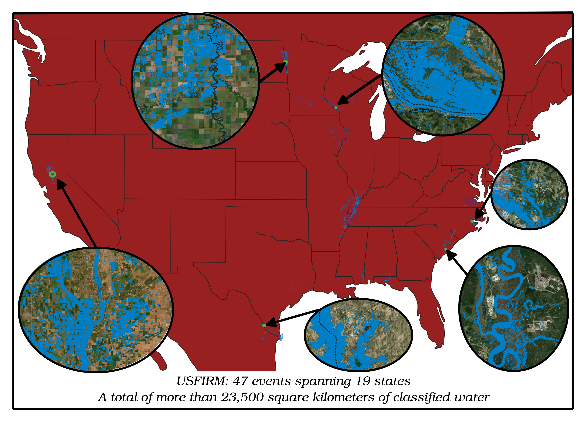
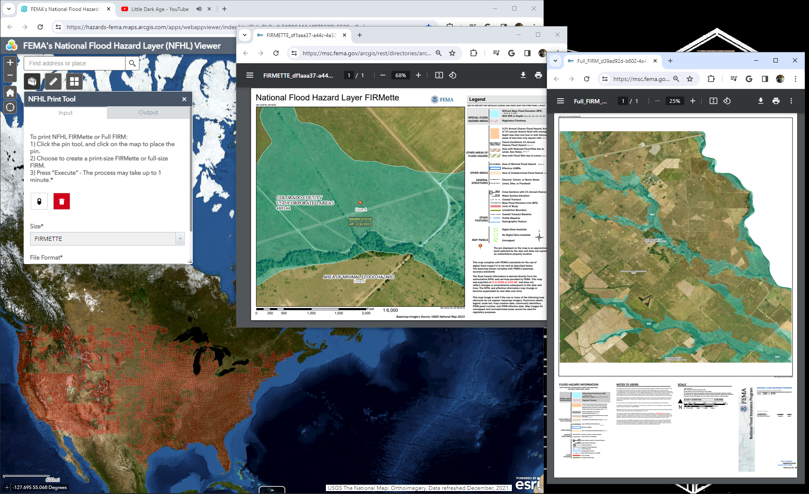
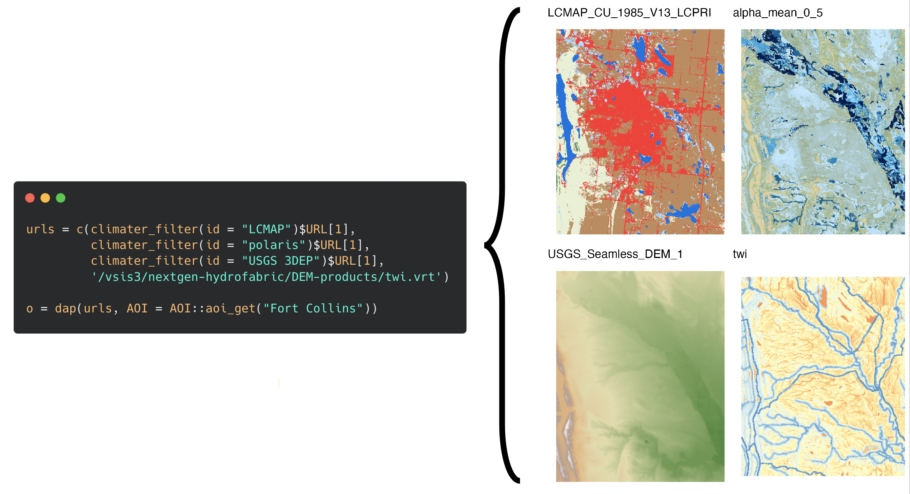
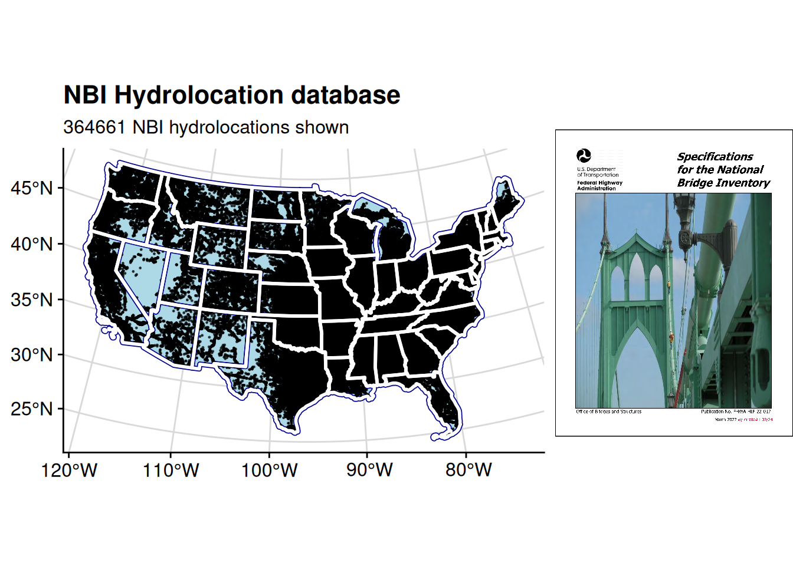

| Acronym | Longform | Definition |
|---|---|---|
| 500-Year Flood | See 0.2-Percent-Annual-Chance Flood | |
| 50-Year Flood | See 2-Percent-Annual-Chance Flood. | |
| Ordinance Level A | Per 44 CFR 60.3 (a), this ordinance level occurs when the Administrator has not defined the special flood hazard areas within a community, has not provided water surface elevation data, and has not provided sufficient data to identify the floodway or coastal high hazard are, but the community has indicated the presence of such hazards by submitting an application to participate in the Program. | |
| Ordinance Level B | Per 44 CFR 60.3 (b), this ordinance level occurs when the Administrator has designated areas of special flood hazards (A zones) by the publication of a community’s FHBM or FIRM, but has neither produced water suface elevation data nor identified a floodway or coastal high hazard area. | |
| Ordinance Level C | Per 44 CFR 60.3 (c), this ordinance level occurs when the Administrator has provided a notice of final flood elevations for one or more special flood hazard areas on the community’s FIRM and, if appropriate, has designated other special flood hazard areas without base flood elevations on the community’s FIRM, but has not identified a regulatory floodway or coastal high hazard area. | |
| Ordinance Level D | Per 44 CFR 60.3 (d), this ordinance level occurs when the Administrator has provided a notice of final flood elevations within Zones A1-30 and/or AE on the community’s FIRM and, if appropriate, has designated AO zones, AH zones, A99 zones, and A zones on the community’s FIRM, and has provided data from which the community shall designate its regulatory floodway. | |
| Ordinance Level E | Per 44 CFR 60.3 (e), this ordinance level occurs when the Administrator has provided a notice of final base flood elevations within Znes A1-30 and/or AE on the community’s FIRM and, if appropriate, has designated AH zones, AO zones, A99 zones, and A zones on the community’s FIRM, and has identified on the community’s FIRM coastal high hazard areas by designating Zones V1-30, and/or V. | |
| Unnumbered A Zone | Flood insurance rate zones, designated “Zone A” on a FIRM, that are based on approximate studies. | |
| zonal classification | Classification based data set value (ranges) and/or material properties or other attributes specified for polygonal regions as is common with GIS products. | |
| SFHA | Special Flood Hazard Area | The area delineated on a National Flood Insurance Program map as being subject to inundation by the base flood. SFHAs are determined using statistical analyses of records of riverflow, storm tides, and rainfall; information obtained through consultation with a community; floodplain topographic surveys; and hydrologic and hydraulic analyses. |
| SOMA | Summary of Map Actions | A list, generated by FEMA and delivered to the community, that summarizes the LOMAs, LOMR-Fs, and LOMRs that are or will be affected by a physical update to a FIRM. |
| SOMA Category 1 | SOMA Category 1 - LOMRs and LOMAs Incorporated | The modifications effected by the LOMRs and LOMAs have been reflected on the Preliminary copies of the revised FIRM panels. However, these LOMRs and LOMAs will remain in effect until the revised FIRM becomes effective. |
| SOMA Category 2 | SOMA Category 2 - LOMRs and LOMAs Not Incorporated (Revalidated) | The modifications effected by the LOMRs and LOMAs have not been reflected on the Preliminary copies of the revised FIRM panels because of scale limitations or because the LOMR or LOMA issued had determined that the lot(s) or structure(s) involved were outside the Special Flood Hazard Area, as shown on the FIRM. These LOMRs and LOMAs will be revalidated free of charge 1 day after the revised FIRM becomes effective through a single letter that reaffirms the validity of the previous LOMC. |
| SOMA Category 3 | SOMA Category 3 - LOMRs and LOMAs Superseded | The modifications effected by the LOMRs and LOMAs have not been reflected on the Preliminary copies of the revised FIRM panels because they are being superseded by new detailed flood hazard information or the information available was not sufficient to make a determination. These LOMRs and LOMAs will no longer be in effect when the revised FIRM becomes effective. |
| SOMA Category 4 | SOMA Category 4 - LOMRs and LOMAs To Be Redetermined | The LOMCs in Category 2 will be revalidated through a single letter that reaffirms the validity of the determination in the previously issued LOMC. For LOMCs issued for multiple lots or structures where the determination for one or more of the lots or structures has changed, the LOMC cannot be revalidated through this administrative process. The NSP will review the data previously submitted for the LOMR or LOMA request and issue a new determination for the affected properties after the effective date of the revised FIRM. |
| Zone A | The flood insurance rate zone that corresponds to the 100-year floodplains that are determined in the FIS by approximate methods. Because detailed hydraulic analyses are not performed for such areas, no base flood elevations or depths are shown within this zone. | |
| Zone A99 | The flood insurance rate zone that corresponds to areas of the 100-year floodplain what will be protected by a Federal flood protection system where construction has reached specified statutory milestones. No base flood elevations or depths are shown within this zone. | |
| Zone AE | The flood insurance rate zone that corresponds to the 100-year floodplains that are determined in the FIS by detailed methods. In most instances, whole-foot base flood elevations derived from the detailed hydraulic analyses are shown at selected intervals within this zone. | |
| Zone AH | The flood insurance rate zone that corresponds to the 100-year shallow flooding (usually areas of ponding) where average depths are between 1 and 3 feet. Whole-foot base flood elevations are derived from detailed hydraulic analyses are shown at selected intervals within this zone. | |
| Zone AO | The flood insurance rate zone that corresponds to the 100-year shallow flooding ( usually sheet flow on sloping terrain) where average depths are between 1 and 3 feet. Average whole-foot depths derived from the detailed hydraulic analyses. The highest top of curb elevation adjacent to the lowest adjacent grade (LAG) must be submitted if the request lies within this zone. | |
| Zone AR | Zone AR is the flood insurance rate zone used to depict areas protected from flood hazards by flood control structures, such as a levee, that are being restored. FEMA will consider using the Zone AR designation for a community if the flood protection system has been deemed restorable by a Federal agency in consultation with a local project sponsor; a minimum level of flood protection is still provided to the community by the system; and restoration of the flood protection system is scheduled to begin within a designated time period and in accordance with a progress plan negotiated between the community and FEMA. Mandatory purchase requirements for flood insurance will apply in Zone AR, but the rate will not exceed the rate for unnumbered A zones if the structure is built in compliance with Zone AR floodplain management regulations. For floodplain management in Zone AR areas, elevation is not required for improvements to existing structures. However, for new construction, the structure must be elevated (or floodproofed for non-residential structures) such that the lowest floor, including basement, is a maximum of 3 feet above the highest adjacent existing grade if the depth of the base flood elevation (BFE) does not exceed 5 feet at the proposed development site. For infill sites, rehabilitation of existing structures, or redevelopment of previously developed areas, there is a 3 foot elevation requirement regardless of the depth of the BFE at the project site. The Zone AR designation will be removed and the restored flood control system shown as providing protection from the 1% annual chance flood on the NFIP map upon completion of the restoration project and submittal of all the necessary data to FEMA. | |
| Zone D | The flood insurance rate zone that corresponds to unstudied areas where flood hazards are undetermined but possible. | |
| Zone Gutter | Boundary, shown on a Flood Insurance Rate Map, dividing Special Flood Hazard Areas of different Base Flood Elevations, base flood depths, flood velocities, or flood insurance risk zone designations. | |
| Zone V | The flood insurance rate zone that corresponds to the 100-year costal floodplains that have additional hazards associated with storm waves. Because approximate hydraulic analyses are performed for such areas, no base flood elevations (BFEs) are shown within this zone. Mandatory flood insurance purchase requirements apply. | |
| Zone VE | Zone VE is the flood insurance rate zone that corresponds to the 100-year coastal floodplains that have additional hazards associated with storm waves. BFEs derived from the detailed hydraulic analyses are shown at selected intervals within this zone. Mandatory flood insurance purchase requirements apply. | |
| Zone X | The flood insurance rate zone that corresponds to areas outside the 500-year floodplain, areas within the 500- year floodplain, and areas of 100-year flooding where average depths are less than 1 foot, areas of 100-year flooding where the contributing drainage area is less than 1 square mile, and areas protected from 100-year flood by levees. No base flood elevations or depths are shown within this zone. | |
| Zone X (shaded and unshaded) B, and C | Are the flood insurance rate zones that corresponds to areas outside the 500-year floodplain, areas within the 500- year floodplain, and areas of 100-year flooding where average depths are less than 1 foot, areas of 100-year flooding where the contributing drainage area is less than 1 square mile, and areas protected from 100-year flood by levees. No base flood elevations or depths are shown within these zones. |
Data Sources
.png)
.png)
“I have sat in many meetings in which people talk about data as if it were a magical substance that would solve everyone’s problems if only they had more of it.” - Jed Sundwall (Sundwall n.d.)
There are two primary lenses I reach for when you start talking to me about data:
- The friction associated with being a data scientist, both in terms of the technical execution of a workflow and the mass moving data can entail
- Garbage in - garbage out
To address the first, I’ve spent a great deal of time learning, observing, teaching, relearning, and documenting my pathway towards reproducible and more durable knowledge and useful notes. Addressing the second requires a bit of a shift in perspective. Though it’s a common quote that “All models are wrong, some are useful” - George Box Box (1976), this doesn’t usually suffice when the ask-r has that favorite dataset or model they want to see used in an analysis, and while annoying there is (usually) less friction for all involved if you’ve done all the heavy lifting of functionalizing your analysis properly. In theory that should be as easy as swapping inputs…
That being said, there are diminishing returns on all of that effort. Some datasets are more authoritative or more widely used, and so there is value added in quantifying skill using that more consistent benchmark. More tangibly, some datasets are formatted and distributed using modern computational patterns and formats, and that ease of accessibility tips the scales heavily in favor of using that data, since the gravity and friction of that data access has been at least partially mitigated by the provider, meaning the limiting factor to scaling your domain is the size of your PC (or the credit limit on the card tied to your cloud budget).
An additional and very frustrating piece of friction I encounter almost daily is that the chasm between theory and practice has grown so large that the “head work” of swapping inputs and the “hand work” of actually implementing that pipeline can be quite significant, particularly when dealing with spatial scale. Below I’ve copied and modified the Google Earth Engine data catalog layout to more closely document and follow the different datasets I encounter and deploy. Starting with what I most frequently encounter…
Data Sources
Parameterizeing earth system models typically requires a rich mosaic of input data. I attempt to break the following into measurements (in-situ), measurements (remote), and model outputs but of course these categorizations all bleed into each other at the edges.
A preamble: Setting up access and passwords
Related to [[20241009121912]] Setting up ClimateR
You can thank Papa Bush for opening up the satellite archives to the general public, but open and free does not mean frictionless and several of the more authoritative data warehouses make you sign up for an account. Additionally, if you’d like to use the climateR package you’ll need to place credentials into a file so that you can hit these resources..
I am a security disaster and the easiest way to make your life simple and ensure that anyone can use your account is to create the same login for all services. An “Ideal” password that works across all services is something shorter with a capital letter and a few numerics at the end.
```{r}
remotes::install_github("mikejohnson51/climateR",force = TRUE)
climateR::writeNetrc(login = "user",password = "Password123")
climateR::checkNetrc()
sites_stack <- climateR::getGLDAS(AOI=AOI::aoi_get(state = "OR"),
varname='rootmoist_inst',
model='NOAH025_M.2.1',
startDate='2006-10-01',
endDate='2007-09-30',
verbose = TRUE)
```Water Specific
Many of these datasets are deployed in advancement of FIM workflows. Due to the topic-centric lens, some of these are also listed under their respective thematic subsections as well.
Measurements
AHPS and NWPS
The National Weather Service Advanced Hydrologic Prediction Service (AHPS), newly superseded by the National Water Prediction Service (NWPS), is a series of gages and measurements of river stage and discharge collected by the USGS and NOAA, and are our primary means of accounting and managing our water resources and scale.
Bathymetery
Altimitry
ICSAT
SWOT
https://storymaps.arcgis.com/stories/4a9184e813e540248040069580f6a54c
Model data (inputs and outputs)
Hydrogaphy
A term that technically translates to study of water, this is most commonly found in the context of the applied science of measurements of the ocean floor but is often conflated with the study and representation of the flow of water over the earths surface and its’ representation. When you encounter someone talking about hydrography, they likely actually mean…
Hydrofabric
The most technically appropriate term for the conceptual standard as defined by the OGC. (See my Hydrofabric data model Hydrofabric page] for more details. As a concept though, I like to think of “hydrofabric” as the critical differentiator that separates planetary hydrology from earth hydrology. In planetary hydrology, we know nothing about the system that we are trying to model beyond coarse remote measurements, a high quality DEM if we’re lucky. On earth however, we have the advantage of long durations of meaningful measurements and an implied understanding of the system beyond what “just physics” might tell us, so when we try to model our system, it’s useful to know critical areas that we want to represent, the standard flow paths and channels that usually flow, and how basins delineate themselves. The hydrofabric product does this for us. As I like to say, particularly at the national scale, “water flows down channel, not water flows downhill”.
Quick links: Links to the official documentation, publication: (“OGC WaterML 2: Part 3 - Surface Hydrology Features (HY_Features) - Conceptual Model” n.d.), more information and the data bucket
3D Hydrofabric
If hydrofabric is the line/polygon representation of the hydrography of a system, 3D Hydrography is intended to walk all the way back to a point cloud. This is a long running program that is still finding it’s footing, and is still an active area for community to debate and come to a concensus. Our take is here: [[20241016192617]] Hydrofabric3D Data Model
Base Level Engineering
See the sample RRASSLER catalog here; and a STAC’d version of a generated catalog from publicly available RAS models (primarily sourced from FEMA Region 6) here. You can find Dewberries version of a HEC-RAS catalog based on efforts in (Lawler et al. 2025) here.
The National Water Model (NWM)
[[NWM.qmd]] NWM.qmd The National Water Model is a framing and system designed to take atmospheric forcings and landscape states and produce a forecast of discharge for every stream reach in the system. It accomplishes all of this at continental scales and in operational time intervals (Operational for weather prediction at least, hourly predictions using 15 minute timestep-d inputs).
- Base data can be found at:
- Operational data can be found at:. FIM specific
- and accessed with:
- Geoserver: https://opengeo.ncep.noaa.gov/geoserver/www/index.html
- and accessed with:
- NWM retro data can be found at:
- NWM hydrofabric can be found at: https://lynker-spatial.s3.amazonaws.com/index.html
- Training can be found at: https://www.meted.ucar.edu/education_training/lessons?query=National%20Water%20Model&page=1
https://coast.noaa.gov/digitalcoast/
https://www.weather.gov/media/wrn/calendar/NationalWaterModel.pdf
National Water Model retroactive forecasts
https://github.com/NOAA-OWP/hydrotools/issues/157
NexGen Water Model
NextGen is a means of coupling modeling efforts and allowing for different representations of the hydrologic cycle to be able to talk to each other in different spatial extents. This framework allows many of the different types of model formulations to talk to one another while hiding the complexity associated with making those models talk to each other explicitly.
[[20240507073634]] NWM forecast steps [[20240817132222]] Time within the NWM
Auxillary and adjacent
FIM adjacent data, in my mind, includes inundation maps whose objectives, uses, or derivation include forces outside the accurate prediction of inundation (since those values obfuscate and are unaccountable in the empirical or physical processes we are attempting to describe) ancillary asset data can help add context to the mapped outputs of a model.
The U.S. Flood Inundation Mapping Repository (USFIMR)

The USFIMR project commenced in August 2016 with funding from NOAA. The project’s main goal is to provide high-resolution inundation extent maps of past U.S. flood events to be used by scientists and practitioners for model calibration and flood susceptibility evaluation.
By hand digitizing and performing much of the requisite pre-processing, the US Flood Inundation Map Repository (USFIMR) database represents one of the most consolidated and published “ground truth” databases suitable as a means of performing a more consistent benchmarking of FIM results. To derive these, image classification techniques and a number of satellite sensors (e.g., Landsat, Sentinel-1, Sentinel-2) with some ground truthing based on secondary sources (e.g., news reports, social media) were combined with hand digitized water classifications to create bounds and ancillary data for an event. These maps have been widely used to evaluate FIM skill, and so even though the strict application of hydraulics was not used in the process, these maps have a high degree of skill and utility in that they have been used as the means of demonstrating process improvements from version to version of FIM libraries, and because a human (well-trained or in training graduate student) was used in the generation process the results are akin to a deeper dive into the area than an unsupervised classifier might apply.
Flood Insurance Rate Maps

Background and interpretation
As a regulatory product, the use and goals of these maps and data are no longer parallel to those of the hydraulic modeler, but they can help add some context to the underlying values and objectives of the communities they govern. Many of these maps are the result of taking the model outputs for a 1:100 year storm and mapping the elevation as the Base Flood Elevation. Further refinement “based on stakeholder input” are taken into account and the resultant map is accepted as the defacto standard off which flood insurance rates are set and enforced. These maps can display many different areas, but the ones of most common consequence include:
- High-Risk Zones (A & V): These areas are delineate as having the potential to inundate at least once every 100 years, or a 1% annual chance of experiencing a flood event (Sometimes also termed as Annual Exceedance Probability). These maps are the result of the elevations calculated from hydraulic models and the “base flood” that defines it are the zones under which federally backed mortgages must have some form of flood insurance. Zone V is used in coastal zones to indicate the area is impacted by wave action in addition to fluvial flooding.
- Moderate and Low-Risk Zones (X, B, C): These areas define locations which flood less frequently, and specific categories are called out on the FIRM legends. While not all are present for a given area, some of the more commonly found include Zone X (a 0.2% annual chance of flooding, once every 500 years), and medium to low risk zones such as B and C.
A table of zone definitions aggregated from “FEMA Directory” (n.d.). See the glossary for more definitions.
| Zone | Interpretation |
|---|---|
| A | The flood insurance rate zone that corresponds to the 100-year floodplains that are determined in the FIS by approximate methods. Because detailed hydraulic analyses are not performed for such areas, no base flood elevations or depths are shown within this zone. |
| AE | The flood insurance rate zone that corresponds to the 100-year floodplains that are determined in the FIS by detailed methods. In most instances, whole-foot base flood elevations derived from the detailed hydraulic analyses are shown at selected intervals within this zone. |
| AH | The flood insurance rate zone that corresponds to the 100-year shallow flooding (usually areas of ponding) where average depths are between 1 and 3 feet. Whole-foot base flood elevations are derived from detailed hydraulic analyses are shown at selected intervals within this zone. |
| AR | The flood insurance rate zone used to depict areas protected from flood hazards by flood control structures, such as a levee, that are being restored. FEMA will consider using the Zone AR designation for a community if the flood protection system has been deemed restorable by a Federal agency in consultation with a local project sponsor; a minimum level of flood protection is still provided to the community by the system; and restoration of the flood protection system is scheduled to begin within a designated time period and in accordance with a progress plan negotiated between the community and FEMA. Mandatory purchase requirements for flood insurance will apply in Zone AR, but the rate will not exceed the rate for unnumbered A zones if the structure is built in compliance with Zone AR floodplain management regulations. For floodplain management in Zone AR areas, elevation is not required for improvements to existing structures. However, for new construction, the structure must be elevated (or floodproofed for non-residential structures) such that the lowest floor, including basement, is a maximum of 3 feet above the highest adjacent existing grade if the depth of the base flood elevation (BFE) does not exceed 5 feet at the proposed development site. For infill sites, rehabilitation of existing structures, or redevelopment of previously developed areas, there is a 3 foot elevation requirement regardless of the depth of the BFE at the project site. The Zone AR designation will be removed and the restored flood control system shown as providing protection from the 1% annual chance flood on the NFIP map upon completion of the restoration project and submittal of all the necessary data to FEMA. |
| AO | The flood insurance rate zone that corresponds to the 100-year shallow flooding ( usually sheet flow on sloping terrain) where average depths are between 1 and 3 feet. Average whole-foot depths derived from the detailed hydraulic analyses. The highest top of curb elevation adjacent to the lowest adjacent grade (LAG) must be submitted if the request lies within this zone. |
| A99 | The flood insurance rate zone that corresponds to areas of the 100-year floodplain what will be protected by a Federal flood protection system where construction has reached specified statutory milestones. No base flood elevations or depths are shown within this zone. |
| D | The flood insurance rate zone that corresponds to unstudied areas where flood hazards are undetermined but possible. |
| Gutter | Boundary, shown on a Flood Insurance Rate Map, dividing Special Flood Hazard Areas of different Base Flood Elevations, base flood depths, flood velocities, or flood insurance risk zone designations. |
| V | The flood insurance rate zone that corresponds to the 100-year coastal floodplains that have additional hazards associated with storm waves. Because approximate hydraulic analyses are performed for such areas, no base flood elevations (BFEs) are shown within this zone. Mandatory flood insurance purchase requirements apply. |
| VE | The flood insurance rate zone that corresponds to the 100-year coastal floodplains that have additional hazards associated with storm waves. BFEs derived from the detailed hydraulic analyses are shown at selected intervals within this zone. Mandatory flood insurance purchase requirements apply. |
| X | The flood insurance rate zone that corresponds to areas outside the 500-year floodplain, areas within the 500- year floodplain, and areas of 100-year flooding where average depths are less than 1 foot, areas of 100-year flooding where the contributing drainage area is less than 1 square mile, and areas protected from 100-year flood by levees. No base flood elevations or depths are shown within this zone. |
| X (shaded and unshaded) B, and C | The flood insurance rate zones that corresponds to areas outside the 500-year floodplain, areas within the 500- year floodplain, and areas of 100-year flooding where average depths are less than 1 foot, areas of 100-year flooding where the contributing drainage area is less than 1 square mile, and areas protected from 100-year flood by levees. No base flood elevations or depths are shown within these zones. |
Aside: Modifications to these maps
If you want to build in these zones or have a property reevaluated for flood insurance purposes, there are two primary ways to go about accomplishing that. You can either receive a Letter of Map amendment, or a Letter of map Revision. LOMA’s “A Letter of Map Amendment (LOMA) is an official amendment, by letter, to an effective NFIP map. A LOMA establishes a property’s location in relation to the SFHA.” A Letter of Map Revision (LOMR) “is an official revision, by letter, to an effective NFIP map. A LOMR may change flood insurance risk zones, floodplain and/or floodway boundary delineations, planimetric features, and/or BFE.”
Aside: Blending use cases
As I allude to, I do not classify FIRM’s as a FIM product. This is a function of both my relative “power user” status as a hydrologist and how these maps are used across the country. While FIRMS represent the “best available information” for a large swath of the country, there are locations which have neither product, there are locations which have both standard BLE models and FIRMS, and there are locations which have heavy invested in custom hydraulic modeling. None of these different data products will align perfectly. Additionally, much like all “federal” regulations, these set that minimum baseline, but states and counties may opt to adopt more rigorous standards. The standard “better practice” as used now is to compare both and use whichever has the most extent as an informed recommendation. It’s important to note however, that the FIRM extent takes legal precedent in enforcement, even if an alternative model shows greater extents.
Aside: Disaster recovery and payouts
One of the commonly used metrics in the use of these flood insurance programs and the National Flood Insurance Program is the 50% rule. If a building is flooded, insurance payouts can occur in a few different ways. If a building is historic, the renovations may take place but for every dollar spent, a match in flood prevention measures must take place. If the building is not historic and is more than 50% destroyed, renovations must also include bringing the structure back up to code. Enforcement and interpretation is up to the states, FEMA, flood insurance providers, and the lawyers. I just like making the maps and designing the structures.
Sources: https://sarasota.wateratlas.usf.edu/upload/documents/FloodplainFacts.pdf https://www.fema.gov/pdf/nfip/manual201205/content/16_maps.pdf https://adeca.alabama.gov/faq/what-are-the-different-types-of-letters-of-map-change-lomcs/#:~:text=LOMA%20%E2%80%93%20A%20Letter%20of%20Map,to%20an%20effective%20NFIP%20map.
Climate and Weather
Surface Temperature
Thermal satellite sensors can provide surface temperature and emissivity information. The Earth Engine data catalog includes both land and sea surface temperature products derived from several spacecraft sensors, including MODIS, ASTER, and AVHRR, in addition to raw Landsat thermal data.
Climate
Climate models generate both long-term climate predictions and historical interpolations of surface variables. The Earth Engine catalog includes historical reanalysis data from NCEP/NCAR, gridded meteorological datasets like NLDAS-2, and GridMET, and climate model outputs like the University of Idaho MACAv2-METDATA and the NASA Earth Exchange’s Downscaled Climate Projections.
Atmospheric
You can use atmospheric data to help correct image data from other sensors, or you can study it in its own right. The Earth Engine catalog includes atmospheric datasets such as ozone data from NASA’s TOMS and OMI instruments and the MODIS Monthly Gridded Atmospheric Product.
PMP
From NOAA https://hdsc.nws.noaa.gov/pfds/pfds_map_cont.html: https://hdsc.nws.noaa.gov/cgi-bin/new/fe_text.csv?lat=38.0000&lon=-95.0000&data=depth&units=english&series=pds&selAddr=Bronson,%20Kansas,%20USA&selElevNum=1039&selElevSym=ft&selStaName=-
Weather
Weather datasets describe forecasted and measured conditions over short periods of time, including precipitation, temperature, humidity, and wind, and other variables. Earth Engine includes forecast data from NOAA’s Global Forecast System (GFS) and the NCEP Climate Forecast System (CFSv2), as well as sensor data from sources like the Tropical Rainfall Measuring Mission (TRMM).
Imagery
Landsat
Landsat, a joint program of the USGS and NASA, has been observing the Earth continuously from 1972 through the present day. Today the Landsat satellites image the entire Earth’s surface at a 30-meter resolution about once every two weeks, including multispectral and thermal data.
Sentinel
The Copernicus Program is an ambitious initiative headed by the European Commission in partnership with the European Space Agency (ESA). The Sentinels include all-weather radar images from Sentinel-1A and -1B, high-resolution optical images from Sentinel 2A and 2B, as well as ocean and land data suitable for environmental and climate monitoring from Sentinel 3.
MODIS
The Moderate Resolution Imaging Spectroradiometer (MODIS) sensors on NASA’s Terra and Aqua satellites have been acquiring images of the Earth daily since 1999, including daily imagery, 16-day BRDF-adjusted surface reflectance, and derived products such as vegetation indices and snow cover.
High-Resolution Imagery
High-resolution imagery captures the finer details of landscapes and urban environments. The US National Agriculture Imagery Program (NAIP) offers aerial image data of the US at one-meter resolution, including nearly complete coverage every several years since 2003.
Geophysical
Terrain
Digital Elevation Models (DEMs) describe the shape of Earth’s terrain. The Earth Engine data catalog contains several global DEMs such as Shuttle Radar Topography Mission (SRTM) data at 30-meter resolution, regional DEMs at higher resolutions, and derived products such as the WWF’s HydroSHEDS hydrology database.
3DEP
https://usgs.entwine.io/, the footprints live here.
http(s)://<bucket>.s3.amazonaws.com/<object>
http(s)://s3.amazonaws.com/<bucket>/<object>From the URL in /aws s3 sync s3://usgs-lidar-public/USGS_LPC_NY_Sandy_Ul_Du_Or_2013_LAS_2016/
Related: [[CA_Brushes.qmd]] CA_Brushes.qmd
Land Cover
Land cover maps describe the physical landscape in terms of land cover classes such as forest, grassland, and water. Earth Engine includes a wide variety of land cover datasets, from near real-time Dynamic World to global products such as ESA World Cover.
Coastal Land Cover
C-CAP High Resolution Land Cover
https://coast.noaa.gov/digitalcoast/data/ccaphighres.html A 1 to 2.4 meter land cover classification dataset that has coverage of the coasts and includes
The new 1-meter products are useful at the local level in ways not previously possible with national-level data. Advanced artificial intelligence combined with expert human analysis, review, and editing are used to produce these high-quality, standardized, raster-based map products.
Cropland
Cropland data is key to understanding global water consumption and agricultural production. Earth Engine includes a number of cropland data products such as the USDA NASS Cropland Data Layers, as well as layers from the Global Food Security-Support Analysis Data (GFSAD) including cropland extent, crop dominance, and watering sources.
Vector data
Data from other satellite image sensors is available in Earth Engine as well, including night-time imagery from the Defense Meteorological Satellite Program’s Operational Linescan System (DMSP-OLS), which has collected imagery of night-time lights at approximately 1-kilometer resolution continuously since 1992.
Other Geophysical Data
Data from other satellite image sensors is available in Earth Engine as well, including night-time imagery from the Defense Meteorological Satellite Program’s Operational Linescan System (DMSP-OLS), which has collected imagery of night-time lights at approximately 1-kilometer resolution continuously since 1992.
Administrative and
ftp://ftp2.census.gov/geo/tiger/
Other
Open Source GIS Data, specifically the state data index based on efforts from MappingSupport Cartographic line data: http://www.projectlinework.org/
Base imagery: https://www.naturalearthdata.com/downloads/10m-raster-data/
Easy SRTM tiles: http://dwtkns.com/srtm30m/ Topo resources: http://www.earthpoint.us/TopoMap.aspx
Shaded relief data: http://www.shadedreliefarchive.com/ Water resources: https://www.hydroshare.org/landingPage/
Earth as art: https://eros.usgs.gov/image-gallery/earth-as-art https://stn.wim.usgs.gov/FEV/#2022Ian Weather shmorgasbord: * Forecasts: * https://weather.cod.edu/forecast/ * https://www.weather.gov/gis/PublicZones https://www.usgs.gov/mission-areas/water-resources/science/usgs-flood-information#web-tools’; https://datasetsearch.research.google.com/ https://www.google.com/publicdata/directory https://communitycrimemap.com/
Polaris
http://hydrology.cee.duke.edu/POLARIS/PROPERTIES/v1.0/Readme
| Variable | Description | Units |
|---|---|---|
| silt | Silt percentage | % |
| sand | Sand Percentage | % |
| clay | Clay Percentage | % |
| bd | Bulk Density | g/cm3 |
| theta_s | Saturated Soil Water Content | m3/m3 |
| theta_r | Residual Soil Water Content | m3/m3 |
| ksat | Saturated Hydraulic Conductivity | log10(cm/hr) |
| ph | Soil pH in H2O | |
| om | Organic Matter | log10(%) |
| lambda | Pore Size Distribution Index (Brooks-Corey) | |
| hb | Bubbling Pressure (Brooks-Corey) | log10(kPa) |
| n | Measure of the pore size distribution (Van Genuchten) | |
| alpha | Scale parameter inversely proportional to mean pore diameter (Van Genuchten) | log10(kPa-1) |
Across 6 depth ranges (0-5 cm, 5-15 cm, 15-30 cm, 30-60 cm, 60-100 cm, and 100-200 cm) and with (5th, Arithmetic mean, Mode, Median, and 95th percentiles) statistical reporting.
**
ClimateR
See [[20241009121912]] Setting up ClimateR
Gage data
NWIS
AHPS
terrain tools
https://mikejohnson51.github.io/terrain_sliceR/
Bathymetry
https://rimorphis.org/files/resources/workshop2/overview.pdf https://rimorphis.org/files/resources/workshop2/tools.pdf
Open data
Terrain - https://github.com/mikejohnson51/climateR-catalogs Land Cover - https://github.com/mikejohnson51/climateR-catalogs Precip: https://www.cocorahs.org/ https://gisgeography.com/download-usgs-topo-maps-free/
IMERG
IMERG Known anomalies include:
* IMERG overestimates light precip, but at monthly scales this washes out, that added “fake drizzle” accommodates for accumulation values measured at the monthly scale
* Coastal boundaries are blocky and artifact-d
* Processing errors reduce input scenes * “Flashy” precip from two sources: * The GPROF retrievals, and the subsequent IMERG calibrations for them, are not entirely consistent between sensors. Accordingly, users will observe “flashing” in the precipitation fields as successive overpasses in a particular location are populated by different sensors. * The IR estimates sometimes exhibit “flashing” because successive images in a given region are successively populated with data from different geo-IR satellites, usually with one having a near-nadir view, but then dropping out and being replaced by high-zenith-angle data from an adjacent geo-IR satellite. * Sensor drift: The mix of satellites has changed over time, which affects the overall performance of the algorithm in two ways. First, the relative weighting of conical-scan imagers versus crosstrack-scan sounders shifts, and second, the relative proportion of IR-based estimates changes. The PMW sensor inventory is shown in “sensors contributing to IMERG”. See Behrangi et al. (2014) for more discussion of sensor performance for legacy algorithms. * and a whole host of outages as outlined below:
Infrastructure
National Bridge Inventory
The National Bridge Inventory (NBI) serves as the authoritative data source for the location, description, classification, and condition of the critical bridge infrastructure used for inventory and legislative purposes. Maintained by the Federal Highway Administration (FHWA), this extensive dataset encompasses information on over 735,000 bridges along public roads, including interstate highways, U.S. highways, state and county roads, and publicly accessible bridges on federal and tribal lands. This data can be accessed (in ASCII form) here. See how these are being transformed to hydrolocations for the hydrofabric here.

Electricity Use
https://github.com/mdbartos/RIPS - Electric
References
Box, George E. P. 1976. “Science and Statistics.” Journal of the American Statistical Association 71 (356): 791–99. https://doi.org/10.1080/01621459.1976.10480949.
“FEMA Directory.” n.d. https://hazards.fema.gov/femaportal/wps/portal/!ut/p/z0/04_Sj9CPykssy0xPLMnMz0vMAfIjo8zifQI83D38vQ38DdyCLQ0CnY1djAN9TY0NzAz0C7IdFQHJLwc3/. Accessed March 6, 2024.
Lawler, Seth, Thomas Williams, William Lehman, Christina Lindemer, David Rosa, Celso Ferreira, and Chen Zhang. 2025. “Evaluation of the SpatioTemporal Asset Catalog for Management and Discovery of FAIR Flood Hazard Models.” Environmental Modelling & Software 183 (January): 106230. https://doi.org/10.1016/j.envsoft.2024.106230.
“OGC WaterML 2: Part 3 - Surface Hydrology Features (HY_Features) - Conceptual Model.” n.d. https://docs.ogc.org/is/14-111r6/14-111r6.html. Accessed January 31, 2025.
Sundwall, Jed. n.d. “We Don’t Talk About Open Data.” https://radiant.earth/blog/2023/05/we-dont-talk-about-open-data/. Accessed October 19, 2023.